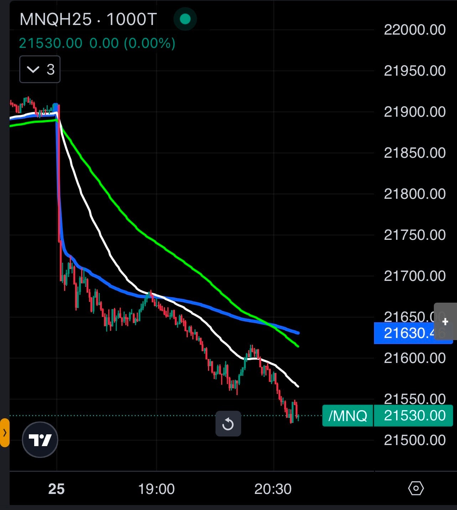
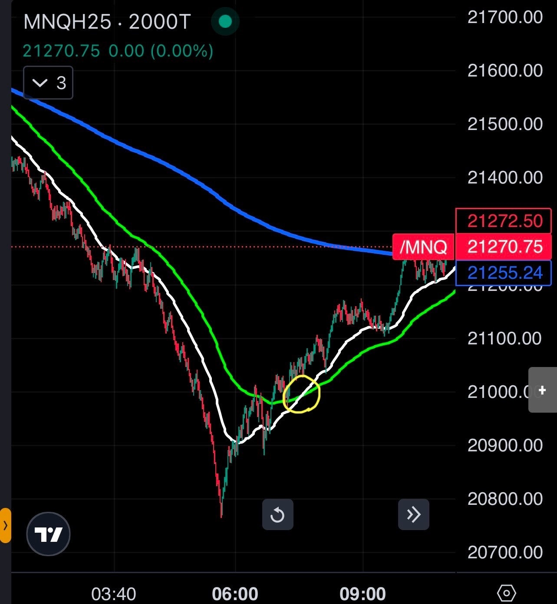
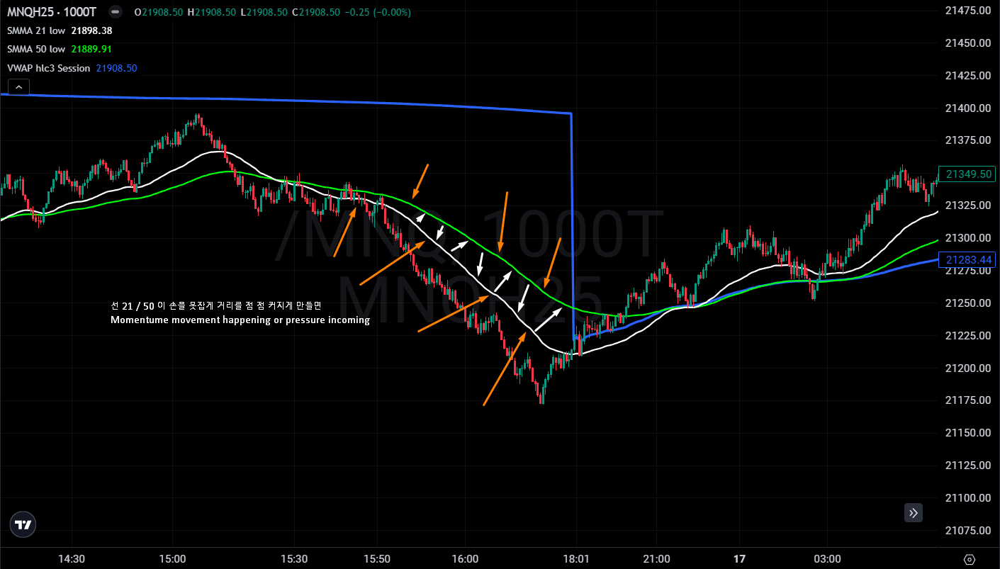

비슷한 SMA movement!
SpaceRanger7 그라인더
2025.01.28. 01:54 조회 1,439
힘들게 생각 하지말고, 차트 SMA indicator 움지김으로 트레이딩!

어제 저녁 gap down 밑으로 쭉!
21 흰색은 밑에
50 초록은 위에
서로 21/50 떨어짐이 커저요
크로스 할려고 하는건 보이지도 않고!

2000T 차트 깨끗하고 한번만 21/50 SMA 선들이 크로스 했네요! 어제 저녁 오늘 아침까지 Short Side 있다가 Long으로 바꼈네요.

Example 보여드렸던거!
차트 스크린타임 많이 하시고, 어떻게 춤을 추는지 기역하기!
SMA 믿고, contract 사이즈도 줄이고, 하루당 필요한거만 벌고 끝!
투모아쓰리모아
큰 도움 감사합니다! 그럼 21sma랑 50sma가 크로스되어 정배열 혹은 역배열일때만 매매하시나요? 아니면 21sma 위나 아래면 long or short 존으로 보시고 트레이딩하실까료?
2025.01.28. 02:45
SpaceRanger7
둘다요!
21 / 50 크로스 하기전에 스타트 contract 시작 하죠, 숏 이나 롱 이나 달리는 방향으로
전 21 SMA 따라 움지겨요.
Long and short
2025.01.28. 03:33
하늘곰
한가지 질문 있습니다. VWAP은 차트에서 어떤 용도로 사용하나요?
2025.01.28. 10:00
안진마
저도 궁금합니다!!
2025.01.29. 14:39
SpaceRanger7
가격을 평균화할 때 거래량을 고려하는 이동 평균 파생 지표 중 하나입니다. VWAP는 볼륨 가중 평균 가격의 약자입니다. 간단히 말해서 거래량 가중 평균 가격은 거래량에 대한 누적 평균 가격입니다.
2025.01.29. 20:35
하늘곰
SpaceRanger7 네 답변은 감사합니다..제가 질문을 잘못 한 둣 싶네요. 다시 질문 해볼께요. 레인저님이 차트보며 타점을 잡고 진입할 때, smma 21/50 과 vwap 상관관계를 물어본 거였네요. 예를 들어 smma 21선이 50선 위에 있어 매수관점일 때 vwap선이 21선 위에 있어도 매수가 유효한지...그반대일 경우도 마찬가지고요. 그리고 21선과 50일선 사이에 vwap 선이 (중간에) 위치할 때 vwap는 진입 관점에서 그냥 무시해도되는지...가 궁금했답니다. ^^
2025.01.29. 20:49
SpaceRanger7
하늘곰 전 간단하게 price action 이 vwap 위에 있으면 bullish, 밑에 있으면 bearish.
SMMA 사용에 아무 상관 없어요.
Vwap is just another separate indicator to have a better chance of us seeing which direction we are standing at.
2025.01.29. 20:55
하늘곰
SpaceRanger7 네 답변 감사합니다 ^^
2025.01.29. 20:57
이보노
하늘곰 저도 딱 궁금했던 질문이었습니다 ^^ 감사합니다
2025.01.31. 13:27
샹크스12
SpaceRanger7님 게시글 잘 읽고있습니다 ! 올리주신 내용중에 Long side로 바뀌고나서 매수포지션을 어디서 들어가야할지 고민중입니다. 이평선에 닿고 다시 Reject하는 모습이 보일때 매수하시는걸까요? 바쁘시겠지만 한수알려주시면 감사하겠습니다 .
2025.05.06. 21:36
원본 : 비슷한 SMA movement!